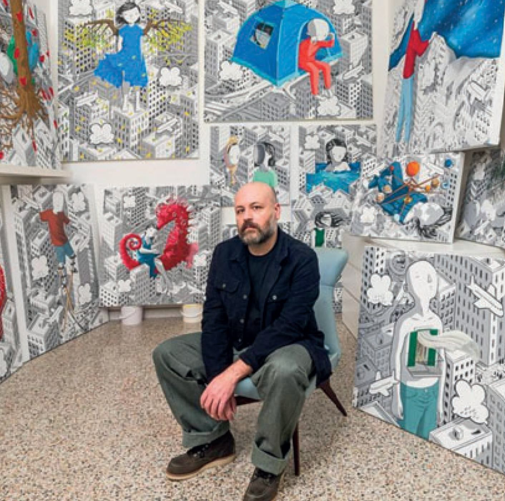

Commissioned for ArtSqr
A monumental line, folded into home
Commissioned from the Italian muralist Millo, a single monumental line-drawing folds the inner courtyard into a private gallery. Known for his vast, graphic black-and-white figures set against pops of colour, Millo treats the façade as a canvas and the residents as its only audience.
Residents do not visit the work — they live beside it. The mural turns an everyday address into a piece of the city's cultural map.